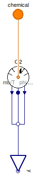
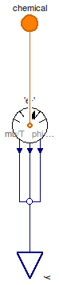
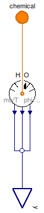

Table of Contents
- User's Guide
- BCs
- Sensors
- Assemblies
- Regions
- Subregions
- Connectors
- Characteristics
- Units
- Quantities
- BaseClasses
Download
- Latest: FCSys-2.0.zip (**Please check back soon or contact kdavies4 at gmail.com.)

Since the connectors in FCSys are hierarchical (see the Connectors package), the models for the sensors must be as well. A ChemicalOutput connector is used in Species models, and there is a corresponding Species sensor model in this package. The ChemicalBus connector is used in Phase models, and there are corresponding ChemicalBus sensor models.
Extends from Modelica.Icons.Package (Icon for standard packages).
| Name | Description |
|---|---|
| Gas | Sensor for gas |
| Graphite | Sensor for graphite |
| Ionomer | Sensor for ionomer |
| Liquid | Sensor for liquid |
| Base classes (not for direct use) |
 FCSys.Sensors.ChemicalBus.Gas
FCSys.Sensors.ChemicalBus.Gas
| Type | Name | Default | Description |
|---|---|---|---|
| Integer | n_lin | 1 | Number of components of linear momentum (nlin) |
| Species | |||
| Boolean | inclH2 | false | Hydrogen (H2) |
| Boolean | inclH2O | false | Water (H2O) |
| Boolean | inclN2 | false | Nitrogen (N2) |
| Species | N2 | Model | |
| Boolean | inclO2 | false | Oxygen (O2) |
| Type | Name | Description |
|---|---|---|
| ChemicalBus | chemical | Multi-species connector for material |
| RealOutputBus | y | Bus of measurements |
model Gas "Sensor for gas" extends BaseClasses.NullPhase; // Conditionally include species. parameter Boolean inclH2=false "Hydrogen (H2)";Chemical.Species H2(final n_lin=n_lin) if inclH2 "Model"; parameter Boolean inclH2O=false "Water (H2O)";Chemical.Species H2O(final n_lin=n_lin) if inclH2O "Model"; parameter Boolean inclN2=false "Nitrogen (N2)";Chemical.Species N2(final n_lin=n_lin) if inclN2 "Model"; parameter Boolean inclO2=false "Oxygen (O2)";Chemical.Species O2(final n_lin=n_lin) if inclO2 "Model"; equation // H2connect(H2.chemical, chemical.H2); connect(H2.muPerT, y.H2.muPerT); connect(H2.phi, y.H2.phi); connect(H2.hbar, y.H2.hbar); // H2Oconnect(H2O.chemical, chemical.H2O); connect(H2O.muPerT, y.H2O.muPerT); connect(H2O.phi, y.H2O.phi); connect(H2O.hbar, y.H2O.hbar); // N2connect(N2.chemical, chemical.N2); connect(N2.muPerT, y.N2.muPerT); connect(N2.phi, y.N2.phi); connect(N2.hbar, y.N2.hbar); // O2connect(O2.chemical, chemical.O2); connect(O2.muPerT, y.O2.muPerT); connect(O2.phi, y.O2.phi); connect(O2.hbar, y.O2.hbar); end Gas;
FCSys.Sensors.ChemicalBus.Graphite
| Type | Name | Default | Description |
|---|---|---|---|
| Integer | n_lin | 1 | Number of components of linear momentum (nlin) |
| Species | C | redeclare Chemical.Species C... | Model |
| Species | |||
| Boolean | inclC | false | Carbon (C) |
| Boolean | 'incle-' | false | Electrons (e-) |
| Type | Name | Description |
|---|---|---|
| ChemicalBus | chemical | Multi-species connector for material |
| RealOutputBus | y | Bus of measurements |
model Graphite "Sensor for graphite" extends BaseClasses.NullPhase; // Conditionally include species. parameter Boolean inclC=false "Carbon (C)";replaceable Chemical.Species C(final n_lin=n_lin) if inclC "Model"; parameter Boolean 'incle-'=false "Electrons (e-)";Chemical.Species 'e-'(final n_lin=n_lin) if 'incle-' "Model"; equation // Cconnect(C.chemical, chemical.C); connect(C.muPerT, y.C.muPerT); connect(C.phi, y.C.phi); connect(C.hbar, y.C.hbar); // e-connect('e-'.chemical, chemical.'e-'); connect('e-'.muPerT, y.'e-'.muPerT); connect('e-'.phi, y.'e-'.phi); connect('e-'.hbar, y.'e-'.hbar); end Graphite;
FCSys.Sensors.ChemicalBus.Ionomer
| Type | Name | Default | Description |
|---|---|---|---|
| Integer | n_lin | 1 | Number of components of linear momentum (nlin) |
| Species | |||
| Boolean | inclC19HF37O5S | false | Nafion sulfonate (C19HF37O5S) |
| Boolean | inclH2O | false | Water (H2O) |
| Boolean | 'inclH+' | false | Protons (H+) |
| Type | Name | Description |
|---|---|---|
| ChemicalBus | chemical | Multi-species connector for material |
| RealOutputBus | y | Bus of measurements |
model Ionomer "Sensor for ionomer" extends BaseClasses.NullPhase; // Conditionally include species. parameter Boolean inclC19HF37O5S=false "Nafion sulfonate (C19HF37O5S)";Chemical.Species C19HF37O5S(final n_lin=n_lin) if inclC19HF37O5S "Model"; parameter Boolean inclH2O=false "Water (H2O)";Chemical.Species H2O(final n_lin=n_lin) if inclH2O "Model"; parameter Boolean 'inclH+'=false "Protons (H+)";Chemical.Species 'H+'(final n_lin=n_lin) if 'inclH+' "Model"; equation // C19HF37O5Sconnect(C19HF37O5S.chemical, chemical.C19HF37O5S); connect(C19HF37O5S.muPerT, y.C19HF37O5S.muPerT); connect(C19HF37O5S.phi, y.C19HF37O5S.phi); connect(C19HF37O5S.hbar, y.C19HF37O5S.hbar); // H+connect('H+'.chemical, chemical.'H+'); connect('H+'.muPerT, y.'H+'.muPerT); connect('H+'.phi, y.'H+'.phi); connect('H+'.hbar, y.'H+'.hbar); // H2Oconnect(H2O.chemical, chemical.H2O); connect(H2O.muPerT, y.H2O.muPerT); connect(H2O.phi, y.H2O.phi); connect(H2O.hbar, y.H2O.hbar); end Ionomer;
FCSys.Sensors.ChemicalBus.Liquid
| Type | Name | Default | Description |
|---|---|---|---|
| Integer | n_lin | 1 | Number of components of linear momentum (nlin) |
| Species | |||
| Boolean | inclH2O | false | Water (H2O) |
| Type | Name | Description |
|---|---|---|
| ChemicalBus | chemical | Multi-species connector for material |
| RealOutputBus | y | Bus of measurements |
model Liquid "Sensor for liquid" extends BaseClasses.NullPhase; // Conditionally include species. parameter Boolean inclH2O=false "Water (H2O)";Chemical.Species H2O(final n_lin=n_lin) if inclH2O "Model"; equation // H2Oconnect(H2O.chemical, chemical.H2O); connect(H2O.muPerT, y.H2O.muPerT); connect(H2O.phi, y.H2O.phi); connect(H2O.hbar, y.H2O.hbar); end Liquid;